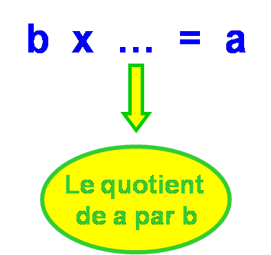
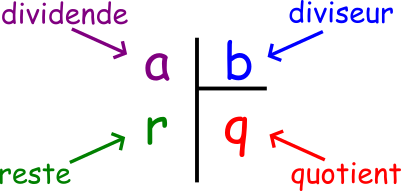
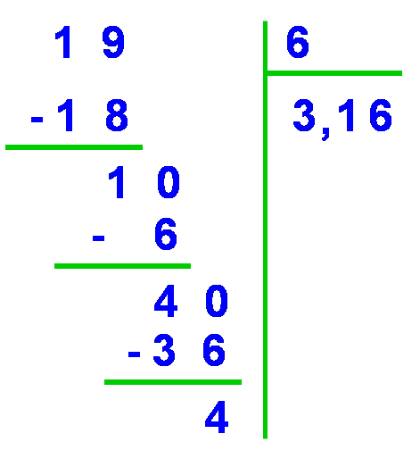

Division
Division décimale
Définitions : Le quotient d’un nombre décimal a par un nombre entier non nul b est le nombre qui, multiplié par b, donne a.
Autrement dit, ce quotient est le facteur manquant dans la multiplication à trou :
Exemple :
Rappel : vocabulaire
Dans la division euclidienne de 45 par 6, 45 est le dividende 6 est le diviseur 3 est le reste 7 est le quotient
Poser une division : technique opératoire
* Pour poser une addition on doit aligner verticalement les chiffres des unités de chaque terme de la somme.
Ordre de grandeur d’une somme
* Effectuons la division de 296 par 4. On prend les chiffres du dividende un à un à partir de la gauche jusqu’à obtenir un nombre supérieur au diviseur. Ici on prend donc 29. Puis on cherche les multiples de 4 : 4 x 2 = 8 4x 3 = 12 ... 4 x 7=28 29 est compris entre 28 et 32 donc on écrit 7 au quotient et on soustrait 28 à 29.
Exemple :


Remarque
Quelques fois la division ne s’arrête pas.
On obtient alors seulement une valeur approchée du résultat.
